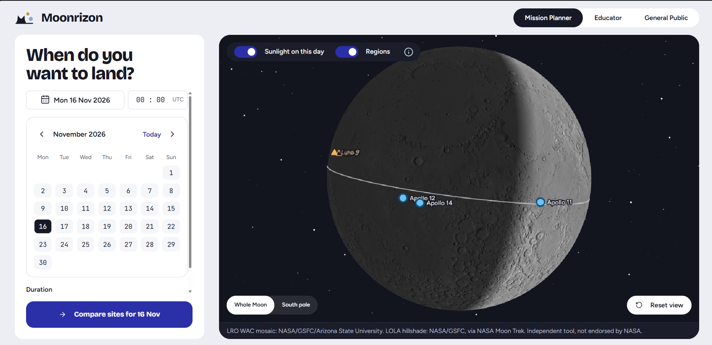

Moonrizon: a lunar landing site navigator
Where on the Moon should you land, and when? Moonrizon compares candidate sites and dates by terrain horizon, sunlight and line of sight to Earth.
My main part The classification engine: for the chosen date, it rates every candidate landing site and assigns it a letter grade.
- Front-end: 3D Moon globe, horizon panorama, visibility timelines and site-comparison reports.
- Back-end: FastAPI job service computing horizons from LRO/LOLA terrain data and Sun/Earth positions from JPL Horizons.
- Built in one hackathon weekend, shipped with Docker Compose.
